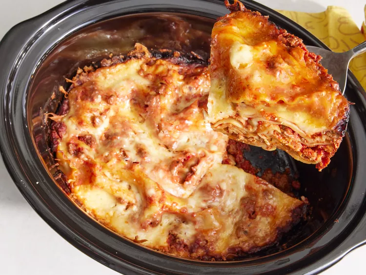

Home
Slow Cooker Lasagna

Description
Ingredients: (8 servings)
- 1 pound lean ground beef
- 1 medium onion, chopped
- 2 teaspoons minced garlic
- 1 (29 ounce) can tomato sauce
- 1 (6 ounce) can tomato paste
- 1 ½ teaspoons salt
- 1 teaspoon dried oregano
- 16 ounces shredded mozzarella cheese
- 12 ounces cottage cheese
- ½ cup grated Parmesan cheese
- 1 (12 ounce) package lasagna noodles
Steps:
-
Gather all ingredients.
-
Cook ground beef, onion, and garlic in a large skillet over medium heat until the meat is browned.
-
Add tomato sauce, tomato paste, salt, and oregano and stir until well combined and heated through.
-
Stir mozzarella, cottage cheese, and Parmesan together in a large bowl.
-
Spoon a layer of the meat mixture onto the bottom of a slow cooker.
-
Add a double layer of uncooked lasagna noodles, breaking noodles to fit into cooker as needed.
-
Top noodles with a portion of cheese mixture.
-
Repeat the layering of sauce, noodles, and cheese until all the ingredients are used.
-
Cover and cook on Low until lasagna noodles are tender, about 4 to 6 hours.